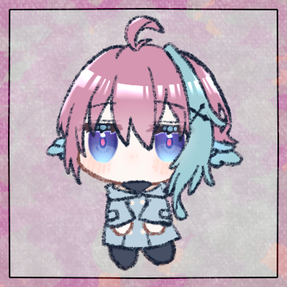
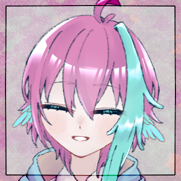
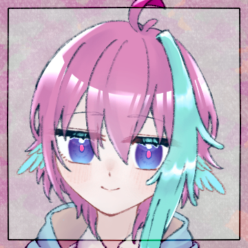
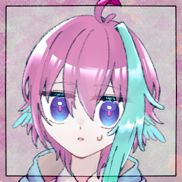
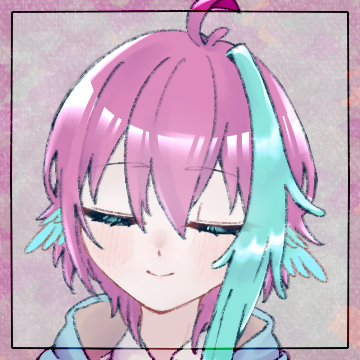

noname
1d12 出自表参照 (1D12) ＞ 5

チェリヴィ
3B12 (3B12) ＞ 5,7,11

クライド
3b12 (3B12) ＞ 2,4,3
[ チェリヴィ ] 技師の指 : 0 → 1
クライド
＊2をスゴ味、3を幻視、4を着服にチャージ
[ クライド・クルック ] スゴ味 : 0 → 1
[ クライド・クルック ] 幻視 : 0 → 1
[ クライド・クルック ] 着服 : 0 → 1
noname
モーリェの誕生日であり命日である1/20。
その月命日となる2/20。
チェリヴィ
「落水さんから、藁、もらってきました！」

チェリヴィ
「力の要る作業とか、魔術を使うこととか、あるから」
クライド
チェリヴィから藁を受け取り、抱えながら。
白
「この素材なら……分量的にも余裕はありそうですね」
クライド
「あまり、駄目にしすぎないよう気をつけよう」
白
「ま、難しかったら木材のみで作ってしまっても良いでしょう」
白
伝統て的には藁と竹ですが、そういうのもあるのです
チェリヴィ
「クライドさんの手が痛くなったら、お薬塗ります！」
チェリヴィ
「あとね、白さんは、船がすぐには沈まないように、魔術をかけてほしいの」
チェリヴィ
「そのまま流そうと思うんだけど、紙を貼るだけだとすぐ沈んじゃうから……」
チェリヴィ
「ぎじんしき……がいいかも、って、落水さんが言ってた。できる？」
白
「問題なくできますよ、必要なものも普段のワンダラー仕事のものでいけるでしょう」
白
「……ああ、仕事の時にたまに紙とか飛ばしていたでしょう。擬人式というのはあれです」
クライド
「ああ……」思い当たったらしい。頷いて。
チェリヴィ
「たぶんほんかくてきじゃないやつ……簡単な頼みごとを、聞いてくれるくらいの」
白
「普段は人型に切った紙などを依代に用いているのですが……それを精霊船にかけるということですね」
白
「大丈夫、多少の推進力にして転覆を防ぐくらいはできますよ」
クライド
さまざまな場所で不思議が働いてくれるものだ。
クライド
1d12 とりあえずシャワールーム使用 (1D12) ＞ 5
[ クライド・クルック ] いいね！ : 0 → 1
クライド
＊ホームジムTypeA使用 交戦目標値+1
[ チェリヴィ ] 着服 : 0 → 1
チェリヴィ
＊高級米を買い、システムキッチンで料理します
リミットガムも噛みます
チェリヴィ
(7+0)B12<=6+1+2 手先（＋不思議精密ツールキット） (7B12<=9) ＞ 2,5,4,6,7,9,7 ＞ 成功数7
チェリヴィ
＊2を幻視、4を褪せぬ想い、5をいいね！、6を着服にチャージ リミットガム効果で成功度2
[ チェリヴィ ] 幻視 : 0 → 1
[ チェリヴィ ] 褪せぬ想い : 0 → 1
[ チェリヴィ ] いいね！ : 0 → 1
[ チェリヴィ ] 着服 : 1 → 2
チェリヴィ
＊高級おにぎりが3つできました。2つをクライドさんと白さんにあげます
ハンドアウト/藁を編む
❓ 藁を編む〈作業〉
藁を編んで船の形にしましょう。
🎲〔しっかり編む：基準値〕【交戦】
ギュッと締めて編みます。
✅ 手が痛い：このHOに挑戦して解決しなかった場合、1点ダメージを受けます。
ハンドアウト/擬人式
❓ 擬人式〈作業〉
船がすぐには沈まないように、擬人式を使って補強します。
🎲〔魔力を込める：基準値〕【学問】
短時間の防水の術式をかけます。
✅ ふにゃ……：このHOに挑戦して解決しなかった場合、「紙を貼る」にて手に入れるアイテム「精霊船」「いまいちな精霊船」が沈みやすくなります。
ハンドアウト/紙を貼る
❓ 紙を貼る〈作業〉
藁の船に紙を貼りつけて飾りましょう。
🎲〔飾る：基準値〕【手先】
船に綺麗に折り紙を貼りつけます。
✅ うまくできた：このHOに挑戦して解決すると、アイテム「精霊船」を得ます。
✅ なんかいまいち：このHOに挑戦して解決しなかった場合、アイテム「いまいちな精霊船」を得ます。
noname
＊こういったものを用意していただいています。
クライド
＊順番的に俺からであるようなので、手番を頂きます。
チェリヴィ
「んと、こうやって藁を持って、それでこうして……」
チェリヴィ
ちょっと藁をもらってデモンストレーション。
チェリヴィ
「これを、ギュッてしめます。痛いです」
クライド
「チェリヴィのようには痛まないと思うが」
クライド
見様見真似、チェリヴィよりよほど拙い指の動き。
クライド
男の硬い皮膚が乾いた藁に傷つけられることはない。
チェリヴィ
「そんな感じで、ずっと編んで、ギュッ、です」
クライド
擦れて厚くなった皮膚はしなやかで柔らかな皮膚とは違い、
乾燥した藁材への摩擦を発生させる。
クライド
編み方、藁を潜らせる場所などは都度指導してもらう必要があったが、
チェリヴィ
適宜教えつつ、大体の時間は、応援……。
クライド
想いを込めることがこの儀の趣旨であることを思えば、
クライド
その応援にこそ、もっとも価値があるように思われた。
白
儀式なるものは、得てして心を整えていく工程と言える。
白
心というものは見えなくて、形がなく、流れ行くものだからこそ。
儀によって其れに形と動きを持たせる。
白
編まれた藁の、そこにある”もの”の一つ、一つに、また心が織り込まれていくのを。
クライド
形なきものに形を与え、目に見えるものへと変えゆく工程を。
クライド
教えられながら、見守られながら、進めていく。
クライド
＊手番の判定前に料理を頂きます。
チェリヴィからもらったおにぎり＋わーいお茶で。
クライド
3b12 (3B12) ＞ 12,12,10
クライド
＊あまりのことに驚きましたが、気を取り直して判定していきます。
クライド
＊🎲〔しっかり編む：基準値3〕【交戦】に挑戦。
普通にそのまま判定します
クライド
8B12<=6+1+1 交戦 ホームジムTypeA (8B12<=8) ＞ 3,3,5,2,10,12,6,6 ＞ 成功数6
[ クライド・クルック ] 幻視 : 1 → 0
クライド
＊3と3を幻視にチャージ、2をスゴ味にチャージして成功度3で確定。
着服を切ります
[ クライド・クルック ] 幻視 : 0 → 2
[ クライド・クルック ] スゴ味 : 1 → 2
[ クライド・クルック ] 着服 : 1 → 0
クライド
＊5を褪せぬ想い、6を頭の体操、6を着服にチャージ
[ クライド・クルック ] 頭の体操 : 0 → 1
[ クライド・クルック ] 褪せぬ想い : 0 → 1
[ クライド・クルック ] 着服 : 0 → 1
[ ❓ 藁を編む〈作業〉 ] しっかり編む : 3 → 0
クライド
教わるがまま、応援されるがままに編み上がった藁の船を見下ろす。
チェリヴィ
これなら、海の向こうまで、ちゃんと送れるような気がした。
白
「そのまま流すものと、後で回収するもの、流した上で燃やすものとがあるのですが」
チェリヴィ
「そのまま流したいです。だから、乗せるものとか、飾るものは、そのまま流しても大丈夫なもので……」
白
「……それと、流し場までの道中を爆竹を鳴らしながら歩く、というものもあるのですが」
クライド
「九曜ならともかく、今回はベルガニアだし」
白
「まあ、こちらは意味合いといては魔除けの筈ですので……」
クライド
飛行艇の運行予定と照らし合わせた結果ベルガニアになった。
クライド
「白の存在そのものが魔除けになる、ということだろう」
白
「ええ、そうです。まあ大凡爆竹になるということでも間違っていませんね」
クライド
合ってるのか……？ まあ俺が訂正する必要のあることじゃないか……。
白
「私が大幣振りながら歩けば魔は除けられますよ」
クライド
白の祓い性能に関しては度々目にしている。
クライド
一番印象的だったのはアシュタラの件だが……。
白
ベルガニアの海までの道程に、たまたま通りすがった百鬼夜行列車でも居ない限りは大丈夫です。
チェリヴィ
ベルをカランカラーンとするイメージが頭に浮かんでいる。
白
「大抵は夜……それも静かで暗い夜を思い浮かべるでしょう？」
白
「それを打ち払うものとなれば、光と音となるものです」
白
「そうですね。魔除けであったり道標であったり……」
白
「何にせよ、海の向こうまでの道行きが安全なものとなるよう、願いを篭めて清め祓われるわけです」
白
「では鈴は後ほど用意するとして、その清め祓われた道中を無事に進めるよう、式を篭めておきますか」
クライド
講義を聞くような姿勢になっていたが、話が本題に戻ったので。
クライド
その様子を見ていたが、白の言い草に首を傾ぐ。
白
「私が船に念を込めている間に、これを人型に切っておいてくれませんか？」
白
「そしてクライドには、余った藁と適当な素材で」
白
「チェリヴィが切った人型で扱えそうな、櫂を作ってください」
白
「……船に一人で乗せるより、にぎやかな方がいいでしょう？」
白
「単に魔力で推進力をつけるより、せっかくなら式神に漕がせてしまいましょう」
クライド
「藁で作る櫂か……」余った藁を手に取りながら。
クライド
この手の創造性にはとんと欠けているためいまいち思いつかず。
白
「……素材は変えても構いませんよ、あまり重いものだと式神では漕げなくなりますが」
白
「できますが、芯がないと流石にへたっちゃいますね」
白
擬人式。ないし式神。
それは念でもって擬似的に命を編む行為。
白
それは儀式でもって想いを形にする行為そのものであり、……物に宿る生命を、付喪神を作り出すような行為でもある。
白
意味を見出し、目的を持ち、想いを篭めて、何かを産み出す。
白
巡りゆくものをそこに感じながら。また己の想いも篭めて、魔を編み込む。
[ 白 ] 誤り指摘 : 0 → 1
白
(7+0)B12<=6+0 手先 (7B12<=6) ＞ 3,4,3,4,5,12,11 ＞ 成功数5
白
＊2,3を誤り指摘、4,を博識、5を着服にチャージ 判定は失敗
[ 白 ] 誤り指摘 : 1 → 3
[ 白 ] 着服 : 0 → 1
[ 白 ] 博識 : 0 → 1
白
で、〔魔力を込める：基準値3〕【学問】 に挑戦。
[ 白 ] 博識 : 1 → 0
白
(6+1)B12<=6+1+1 学問 (7B12<=8) ＞ 6,9,2,12,2,7,4 ＞ 成功数5
[ 白 ] 誤り指摘 : 3 → 2
白
1B12<=6+1+1 (1B12<=8) ＞ 6 ＞ 成功数1
白
2.2.4を誤り指摘、博識、褪せぬ想いチャージ した上で3成功
[ 白 ] 誤り指摘 : 2 → 3
[ 白 ] 褪せぬ想い : 0 → 1
[ 白 ] 博識 : 0 → 1
白
改めて添えられた指から、優しい光が船を包むように覆って。
白
船の船体に一つ、墨で書かれたような「◯」のマークが浮かんだ後、光が消える。
クライド
櫂に挟むための藁を切りながら、その様子を見ている。
白
「これだけでも見た目よりは頑丈になりましたし、ある程度は波を避けてくれるはずです」
チェリヴィ
「ありがとう。僕も、いいお友達作るね」
チェリヴィ
ジンジャーマンクッキーのようなフォルムの、船の漕ぎ手を作りながら、微笑んだ。
クライド
それが誰のものであるかを思いながら、鋏を切り進める。
チェリヴィ
真剣な顔で、人型の和紙に顔を描いて、服を着せる。
チェリヴィ
シャツの形に切った折り紙を貼りつけて、花の模様をつけて。
チェリヴィ
花の模様の白いシャツワンピースを着た紙人形だ。
白
「できたら、船に乗せておいて貰えれば……海で流す時に動き出しますよ」
チェリヴィ
「あのね、今度、白さんに魔法教えてほしいんだ」
チェリヴィ
「針と糸を使って、できるんじゃないかなって思ったの」
クライド
切ってもらった紙のオールを貰い、接着剤を貼り付ける。
作業の傍らに二人の話を聞いている。
白
「……そうですね、今回のような式を使うものができるでしょう」
白
「良いですよ、私に教えられる事であれば何であれお教えしましょう」
チェリヴィ
「やったあ！ えへ、これが終わったら、また教えてね」
チェリヴィ
紙人形を完成させたついでに、そのまま折り紙を取り出して。
チェリヴィ
「あのね、キャメロン先生から折り紙もらったの」
クライド
藁を仕込んだオールを完成させながらチェリヴィの出した折り紙を見る。
チェリヴィ
「水に溶けて、海に流しても大丈夫なやつ」
チェリヴィ
魔術の施された折り紙で、折るとしばらくの間動き回って偵察とかしてくれるやつで……云々。
チェリヴィ
「基本的には、折り紙を折るって話だから……そうなるのかな？」
チェリヴィ
「まだ、ずっと動き回ったりは難しいから。お休みしながらそういう仕事ができたらいいです」
クライド
「白に教わりながら受けるのもいいかもしれないしな……」
クライド
完成したオールを、紙人形の隣に並べながら。
チェリヴィ
そうこうしているうちに、船の形に沿うように折り紙を切り取り終わって。
あとは貼りつけて飾るだけだ。
チェリヴィ
＊手番をもらい、〔飾る：基準値〕【手先】に挑戦します。
作ったおにぎりとわ～いお茶で食事
チェリヴィ
3B12 (3B12) ＞ 7,5,5
チェリヴィ
＊わ～いお茶で7を6にして、着服、いいね！、技師の指にチャージ
[ チェリヴィ ] 着服 : 2 → 3
[ チェリヴィ ] いいね！ : 1 → 2
[ チェリヴィ ] 技師の指 : 1 → 2
チェリヴィ
(7+0)B12<=6+1+2 手先（＋不思議精密ツールキット） (7B12<=9) ＞ 6,1,10,4,3,5,8 ＞ 成功数6
チェリヴィ
＊1を真実の愛に、3を幻視に、4を技師の指にチャージして成功度3で確定
[ チェリヴィ ] 真実の愛 : 0 → 1
[ チェリヴィ ] 幻視 : 1 → 2
[ チェリヴィ ] 技師の指 : 2 → 3
[ チェリヴィ ] 着服 : 3 → 2
[ チェリヴィ ] 着服 : 2 → 3
[ チェリヴィ ] いいね！ : 2 → 3
チェリヴィ
真剣な顔で、切った折り紙に糊付けして、船体を覆うように貼っていく。
チェリヴィ
よれないように……破れないように……。
チェリヴィ
たまに花や草木の形に切り取った折り紙も貼りつつ……。
チェリヴィ
「……見た目も、賑やかだと、楽しいかなって」
白
「良いですねえ、お迎えもこれなら見逃したりはしないでしょう」
クライド
「春も近いしな」触れるか触れないかで草花を示し。
チェリヴィ
「当日になったら、本物のお花も少し乗せましょう」

チェリヴィ
送るための準備はこうして整って。
チェリヴィ
数日後、飛空艇はベルガニアの海近くに寄港した。
noname
＊街に降りる前にギルドで家具使用が可能としましょうか。
[ チェリヴィ ] 真実の愛 : 1 → 2
クライド
1b12 シャワールーム使用 (1B12) ＞ 7
白
1b12 シャワールーム (1B12) ＞ 2
[ クライド・クルック ] 頭の体操 : 1 → 2
クライド
＊ホームジムTypeA使用 忍耐目標値+1
チェリヴィ
＊システムキッチンで高級米と肉を料理します。
リミットガムも使用
チェリヴィ
(7+0)B12<=6+1+2 手先（＋不思議精密ツールキット） (7B12<=9) ＞ 5,2,9,12,5,7,9 ＞ 成功数6
チェリヴィ
＊技師の指、いいね！、幻視にチャージ リミットガム効果で成功度2で確定
[ チェリヴィ ] 技師の指 : 3 → 4
[ チェリヴィ ] いいね！ : 3 → 4
[ チェリヴィ ] 幻視 : 2 → 3
チェリヴィ
＊角煮入りおにぎりができました。二人にもあげます。
クライド
＊いい加減お金を支払ってわーいお茶に変更しますかこのドリンクサーバー
クライド
＊というわけでわーいお茶を２つ獲得して、２人に渡しておきます
白
糖分が控えられ、健康的なお茶となった（もらいました）
noname
🏙️ アイスヘイヴン（都界）
海に面したベルガニアの観光地。
✅ 商業施設：アイテムの売買が可能です。
noname
＊こちらへ移動とあいなりまして、HOが３つあります。
ハンドアウト／魔除けをする
❓ 魔除けをする〈作業／不思議〉
見送られる者のため、その道程を清めましょう。
🎲〔魔を祓う：基準値〕【話術／学問】
さまざまな手段があるらしいので、一番適したものをお願いします。
✅ 逆効果：このHOに挑戦してファンブルした場合、Lv7遭遇表を１回振り、エネミーが「外界の海」に追加されます。
ハンドアウト／ 海へ送る
❓ 海へ送る〈作業〉
精霊船を海に流します。
🎲〔船を流す：基準値〕【学問／手先／忍耐】
想いを込めて。
✅ 滲む視界/覆る船：このHOに挑戦してファンブルした場合、アイテム「精霊船」を失います。
ハンドアウト／ 別れを告げる
❓ 別れを告げる〈作業／不思議／対話〉
あの子へと別れを告げます。
🎲〔さようなら：基準値〕【話術／忍耐】
繰り返し。繰り返し。何度でも。
✅ 未練：このHOに挑戦してファンブルした場合、「モーリェ」へのLOVEの【深度】が＋1（ない場合新規獲得）されます。
noname
＊こちらの３つ。
あと隣にもう１個プレイスが一応あるので置いておきます。
noname
🏙️ 外界の海（外界）
海に面したベルガニアの観光地。
の、アンチワンダーの効いていない地域。
noname
＊今回は外界に行く予定はないはずなので、都界の方へと移動としましょう。
noname
好天に恵まれようとも、冬のベルガニアの風は冷たい。
noname
観光客の姿はまばら。この時期に泳ぐものもない。
noname
それでも時折、家族連れやカップルの姿が見受けられる。
noname
そんな中を、人気のない海を目指して歩いた。
チェリヴィ
「もっと重ね着、してくればよかったな……」
白
折りたたみ式の簡易該当を出し、チェリヴィの身体にかける。
白
ワンダラーとしての仕事道具の一つなので、防寒性は折り紙付き。
クライド
開放的だが淡い色の空のもとに、寄せては返す波。
チェリヴィ
白い波の立つ波間を眺めながら、言葉少なに歩く。
白
事前に相談し目処をつけたポイントまで、もう少し。
白
「道中を清める、といっても家を出てから海までのすべてを清める必要はないでしょう」
白
クライド同様、チェリヴィの手元へ視線を寄せて。
白
「そのように胸に抱えられている時点で、魔から護られてあるものですから」
チェリヴィ
両手に収まるほどの大きさの、小さな木の箱。
白
ではなぜ魔を祓う必要があるのか。
それは手元から、そうでない場所へと流すから。
そして願いであり、祈りであり、心の所作でもありはすれば。
クライド
霊璽から、チェリヴィの顔へと視線を移し。
noname
❓ 海を歩く〈作業／対話〉
あの子と海を歩きます。
🎲〔散策する：2〕【学問／観察／運搬】
どんな場所でありましょう。

チェリヴィ
「はい。いっぱい、教えたいことがあります」
チェリヴィ
浜辺に辿り着く。
舗装された道から外れて、細かい砂の擦れる音がした。
チェリヴィ
「砂浜は、さらさらで、よく足が沈んで」
チェリヴィ
「海鳥もいる。あんまりぼうっとしてると、食べ物を攫われちゃうんです」
チェリヴィ
「昔、家族と海に行ったとき、パンを取られちゃいました」
チェリヴィ
「はい。今日もしっかり、気を付けてます」
チェリヴィ
霊璽を抱き込むようにして、上空の目から隠す。
クライド
それをまた庇える位置取りで、細かく足跡を刻む。
チェリヴィ
「不思議です。違うけど、繋がってて、同じ海で」
チェリヴィ
笑みが微かに震えて、眦に潮の雫がひとつ。
チェリヴィ
瞬きでほろりと零れて、頬の上を転がって、砂の上に落ちていった。
クライド
乾いた砂に涙はあっという間に吸い込まれて、
チェリヴィ
それもすぐに乾いて、ただ記憶の表面にだけわずかに跡を残した。
クライド
「……アシュタラの海なら、今でも人がいるかもな」
チェリヴィ
「海は、ひとりになることはなさそうです」
チェリヴィ
しばらく波の揺れるのを、ずっと見つめていた。
クライド
吹きつける風からチェリヴィとモーリェを庇うように。
チェリヴィ
外套と広い背に守られて、あたたかいまま。
チェリヴィ
じっと、形のない我が子に寄り添っている。
チェリヴィ
一滴、二滴、また砂浜に跡がついて、あっという間に波にさらわれた。
クライド
子どものかなしみの波にさらわれるさまを見ていた。
チェリヴィ
＊手番をもらい、HO「海を歩く」に挑戦します
チェリヴィ
＊挑戦前に食事 角煮おにぎりとわ～いお茶
チェリヴィ
3B12 (3B12) ＞ 5,12,5
[ チェリヴィ ] いいね！ : 4 → 5
[ チェリヴィ ] 技師の指 : 4 → 5
チェリヴィ
(5+0)B12<=6+1+2 観察（＋不思議精密ツールキット） (5B12<=9) ＞ 11,12,5,3,10 ＞ 成功数2
[ チェリヴィ ] 幻視 : 3 → 2
クライド
隣の影が膝を伸ばせば、こちらも倣って同じように。
白
胡桃ほどの大きさの鈴。紐で吊るされたそれを渡す。
白
自らは大幣を手に取り、霊璽を抱えるチェリヴィの前に立つ。
チェリヴィ
静かに、どこか不思議そうにそれを見る。
クライド
ここに在るのは、自分と、チェリヴィと、白と、
白
それは世界にあり、それは目に見えぬすべての昏きところにあり、それは心の内にある。
白
儀式というものは、心が辿る歴史を指でなぞるように組み立てられている。
[ 白 ] 博識 : 1 → 0
[ 白 ] 博識 : 0 → 1
[ 白 ] 着服 : 1 → 2
白
(6+1)B12<=6+1+1 学問 (7B12<=8) ＞ 7,10,6,10,10,1,8 ＞ 成功数4
[ 白 ] 着服 : 2 → 1
[ 白 ] 転禍為福 : 0 → 1
クライド
隔絶された世界の中に、清冽の気のまとうものを見る。
白
大幣を振るい、歩く。
その動きは日常の動作とは違う。
速く軽やかなものではなく、しかし重々しいともまた違う。
白
日常（ケ）とは異なること。
それが神聖なるものに思えること。
それに魔が寄るとは思えぬこと。
その一つ一つが力を持って。
チェリヴィ
白く清いものが、道を開く。
そこに魔の寄るものとは、とても思えはしなかった。
チェリヴィ
その認識で以て、その儀式に意味を齎す。
白
それは、アンチワンダーなるものが生まれる前よりそう。
手の届く範囲と、それよりも外には別の世界が広がっている。
白
波間の向こうには。
何が待ち、何が起こるのか。
白
悪しきものはないか。
害するものはないか。
苦しみはないか。
白
薄情ではないのか。
己はすべきことをしていないのではないか。
本当に、そこには愛があったのか。
白
魔を祓い、儀式を執り行なうとは詰まる所、そういう事だから。
白
努めて優しく、努めて神聖な響きでもって促す。
愛を肯定するための儀をもって、
できる限りをしたのだと慰めるための祓えでもって、
己にできる限りの事として。
クライド
自分が編んで、チェリヴィが装飾を施し、白がこれを式とした。
チェリヴィ
それから、いっしょに荷物に入れてもらっていた花や菓子や、絵つけをしたろうそくも乗せて。
クライド
何を乗せられたとて、命の重みには程遠い。
クライド
チェリヴィと白がなにくれと用意したさまざまの装飾が施され。
クライド
膝をついて、チェリヴィと二人、そっと海面へと船を浮かべ。
クライド
＊「 海へ送る」に忍耐で挑戦します。
合わせて食事、チェリヴィに貰った高級米肉おにぎり＋わーいお茶を購入して使用。
クライド
3b12 MPチャージ (3B12) ＞ 7,2,10
クライド
＊7をわーいお茶で6にし、いいねにチャージ
2をスゴ味にチャージ
[ クライド・クルック ] いいね！ : 1 → 2
[ クライド・クルック ] スゴ味 : 2 → 3
クライド
8B12<=6+1+1+1 忍耐 登山靴 ホームジムTypeA (8B12<=9) ＞ 12,2,10,3,4,3,9,9 ＞ 成功数6
[ クライド・クルック ] 幻視 : 2 → 1
[ クライド・クルック ] 着服 : 1 → 0
[ クライド・クルック ] 幻視 : 1 → 2
[ クライド・クルック ] 着服 : 0 → 1
チェリヴィ
5B12<=6 コスト軽減 (5B12<=6) ＞ 3,12,7,10,8 ＞ 成功数1
[ ♡チェリヴィ ] エモ-クライド : 0 → 5
クライド
8B12<=6+1+1+1 忍耐 登山靴 ホームジムTypeA (8B12<=9) ＞ 8,2,3,3,5,4,10,1 ＞ 成功数7
クライド
最後にもう一度チェリヴィと視線を合わせ、頷き。
白
波をかき分け、転倒を防ぎ、どこか賑やかに、道行きを支える。
チェリヴィ
ひとりでに動き出し、船を漕いでいくさまに、
チェリヴィ
追いかけていきそうな足を止めてくれたから。
チェリヴィ
ゆらゆらと揺れながら、それでも進んでいく。
クライド
あたたかな灯火に、華やかな装飾。
にぎやかな供。
チェリヴィ
依代も、花も、菓子も、ろうそくも、船も、何も。
チェリヴィ
波の打ち寄せる場所に、一歩、一歩と近づいて、
チェリヴィ
ブーツを潮に濡らしてしまっても、気づかずに。
チェリヴィ
＊手番をもらい、「別れを告げる」に挑戦します
チェリヴィ
(7+0)B12<=6+0 話術 (7B12<=6) ＞ 4,5,12,1,7,7,5 ＞ 成功数4
クライド
5b12<=6 (5B12<=6) ＞ 8,4,10,6,3 ＞ 成功数3
[ ♡クライド ] エモ-チェリヴィ : 0 → 3
チェリヴィ
(7+0)B12<=6+0 話術 (7B12<=6) ＞ 12,5,4,5,1,2,9 ＞ 成功数5
チェリヴィ
＊チャージはしません。このまま確定します
クライド
チェリヴィの踏み出した爪先に割れて、泡を立てる。
チェリヴィ
それが痛くて痛くて、涙を止める方法も思いつかないまま。
白
人は時によって傷を癒し、時によって前に進み、時によって疵を忘れる。
クライド
皆で作った精霊船は、もうあんなに小さく。
チェリヴィ
稚く顔を歪めて、ひく、ひっく、としゃくり上げる。
チェリヴィ
抱き上げられて、目の前にある肩に顔を埋める。
チェリヴィ
ブーツは、踝の辺りまで濡れて色が変わっていた。
チェリヴィ
それ以上行けなかった自分を、神様は罰するかもしれない。
白
足が止まり、そこで止まったところで溢れた様を、
人とはこういう時に泣くのだな、と見ていた。
クライド
小さな涙の海に溺れる子どもを離さずにいる。
チェリヴィ
腕の中で背を丸めて、泣きじゃくるこどもは。
チェリヴィ
やがて泣き疲れて、静かになって、いつの間にか眠ってしまうだろう。
チェリヴィ
そうして起きたときには、また少し、あの子のことを忘れて。
チェリヴィ
それがいつか積み重なっていくのだろう。
クライド
押し寄せる波が足跡を掻き消すのと同じに。
クライド
変わらずにはいられない。
それは命持つ者の宿痾。
クライド
送り出された船は、やがて溶けて、ひとつになる。
チェリヴィ
2B12<=6 モーリェ (2B12<=6) ＞ 9,3 ＞ 成功数1
チェリヴィ
2B12<=6 メティク (2B12<=6) ＞ 6,4 ＞ 成功数2
クライド
3b12<=6 落水 (3B12<=6) ＞ 10,4,1 ＞ 成功数2
クライド
3b12<=6 トラヴィス (3B12<=6) ＞ 5,5,6 ＞ 成功数3
チェリヴィ
2B12<=6 キャメロン (2B12<=6) ＞ 8,11 ＞ 成功数0
クライド
2b12<=6 エーリカ (2B12<=6) ＞ 2,11 ＞ 成功数1
[ チェリヴィ ] 褪せぬ想い : 1 → 0
チェリヴィ
2B12<=6 キャメロン (2B12<=6) ＞ 8,6 ＞ 成功数1
白
3B12<=6 クライド (3B12<=6) ＞ 12,7,12 ＞ 成功数0
[ 白 ] 褪せぬ想い : 1 → 0
白
3B12<=6 クライド (3B12<=6) ＞ 12,9,11 ＞ 成功数0
[ 白LOVE ] 深度-クライド : 3 → 2
白
5B12<=6 チェリヴィ (5B12<=6) ＞ 5,4,7,6,3 ＞ 成功数4
白
2B12<=6 トラヴィス (2B12<=6) ＞ 3,10 ＞ 成功数1
白
3B12<=6 落水 (3B12<=6) ＞ 3,5,2 ＞ 成功数3
noname
ソウル
・ミッション達成→3点
功績点
・解決ハンドアウト1つにつき → 1*7点
ギフトガチャチケット
・ミッション達成 → 1枚